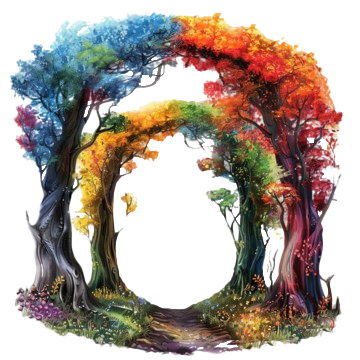
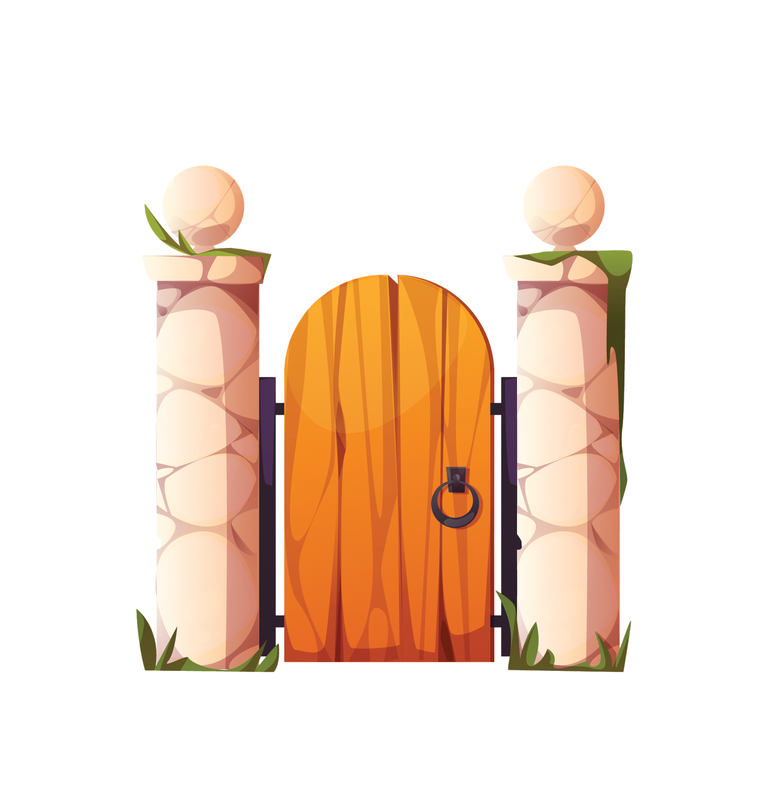

Iona and Amaia looked at each other. No words were needed—they had made their choice.
They stepped through the colourful archway. The garden welcomed them with warmth.
Colours danced, trees bowed, and stars sparkled above. They were finally home.
The garden had chosen them, and they had chosen it.
As the old gate faded, they knew—everything had changed.